วงจรขยายเชิงปฏิบัติการ
(Operational Amplifiers - Op-Amp)
ข้อมูลและหลักการเบื้องต้น (Introduction & Op-Amp Ideal Model)
ออปแอมป์ (Operational Amplifier หรือ Op-Amp) เป็นวงจรรวม (Integrated Circuit: IC) ที่ประกอบด้วยทรานซิสเตอร์ ตัวต้านทาน และไดโอดจำนวนมากบนชิปซิลิคอนขนาดเล็ก นิยมนำมาใช้เป็นแกนหลักในระบบประมวลผลสัญญาณอะนาล็อก (Analog Signal Processing) วงจรกรองสัญญาณ (Active Filters) วงจรเปรียบเทียบแรงดัน (Comparators) และวงจรแปลงสัญญาณต่าง ๆ
หลักการทองคำ 2 ประการของออปแอมป์ในอุดมคติ (The Golden Rules)
เมื่อออปแอมป์ทำงานในย่านเชิงเส้น (Linear Active Region) ร่วมกับระบบป้อนกลับแบบลบ (Negative Feedback loop):
- กฎข้อที่ 1 (Virtual Short): ความต่างศักย์ระหว่างขั้วอินพุตทั้งสองมีค่าเข้าใกล้ศูนย์ นั่นคือ
V+ ≈ V-หรือVd = V+ - V- ≈ 0 V - กฎข้อที่ 2 (Zero Input Current): กระแสไฟฟ้าที่ไหลเข้าขั้วอินพุตทั้งสองมีค่าเป็นศูนย์ นั่นคือ
I+ = 0 AและI- = 0 A
V+ = 0 V) จากกฎ Virtual Short ส่งผลให้ขาอินพุตลบ (Inverting Pin 2) ถูกดึงให้มีศักย์ไฟฟ้าเสมือนอยู่ที่ 0 V ด้วย (V- ≈ 0 V) จึงเรียกว่าเป็น กราวด์เสมือน (Virtual Ground) จุดนี้มีความสำคัญอย่างยิ่งในการวิเคราะห์กระแส KCL
รายการเครื่องมือและอุปกรณ์การทดลอง (Instruments & Components)
อุปกรณ์ที่ใช้ในการปฏิบัติการจริงตามเล่มคู่มือหน้า 91 ประกอบด้วย:
| ลำดับ | รายการอุปกรณ์ / เครื่องมือวัด | รหัส / สเปกพารามิเตอร์ | จำนวน | หน้าที่ในการทดลอง |
|---|---|---|---|---|
| 1 | ไอซีออปแอมป์ (Operational Amplifier) | LM741CN (DIP-8 Package) | 1 ตัว | ขยายสัญญาณทั้งไฟตรง (DC) และไฟสลับ (AC) |
| 2 | แหล่งจ่ายไฟตรงคู่ (Dual-Tracking DC Power Supply) | ปรับตั้งค่าได้ ±15 V | 1 เครื่อง | จ่ายไบแอสรางบวก (+15V Pin 7) และรางลบ (-15V Pin 4) |
| 3 | แหล่งจ่ายไฟตรงเสริม (Auxiliary DC Power Supply) | 0 - 30 V / 1 - 5 V | 1 เครื่อง | จ่ายแรงดันอินพุตไฟตรง Vin (2.5V, 3.3V, 5.0V) |
| 4 | เครื่องกำเนิดสัญญาณ (Function Generator) | GW Instek / Rigol (Sine Wave, 300 Hz) | 1 เครื่อง | จ่ายสัญญาณคลื่นไซน์ vs(t) 1 Vp-p, 2 Vp-p และ 4 Vp-p |
| 5 | ออสซิลโลสโคปแบบดิจิทัล (Digital Storage Oscilloscope) | Rigol DSO-X 2000 (2 Channels, 1 GSa/s) | 1 เครื่อง | วัดรูปคลื่น CH1 (vs) และ CH2 (vout) พร้อมวัดเฟสและ Vp-p |
| 6 | ดิจิทัลมัลติมิเตอร์ (Digital Multimeter - DMM) | Fluke 17B+ / True RMS | 1 เครื่อง | วัดแรงดันไฟตรง Vin, Vout และตรวจสอบแรงดันแหล่งจ่าย |
| 7 | ตัวต้านทานคงที่ (Carbon Film Resistors 1/4W 5%) | 1 kΩ, 4.7 kΩ, 10 kΩ, 22 kΩ | อย่างละ 1-2 ตัว | ใช้เป็น RS, RF, Rin และโหลดจำลอง RL |
| 8 | แผงต่อวงจรและสายโพรบ (Breadboard & BNC Probes) | Solderless Breadboard, BNC-to-Alligator | 1 ชุด | เชื่อมต่อวงจรและจับสัญญาณเข้าเครื่องมือวัด |
แผนผังวงจรและการต่อสายทดลอง (Circuit Schematics)
การต่อวงจรในปฏิบัติการที่ 9 แบ่งออกเป็น 4 วงจรหลักตามคู่มือหน้า 89 - 94 โดยแสดงแผนผังวงจรที่มีความเที่ยงตรงสูงดังนี้:
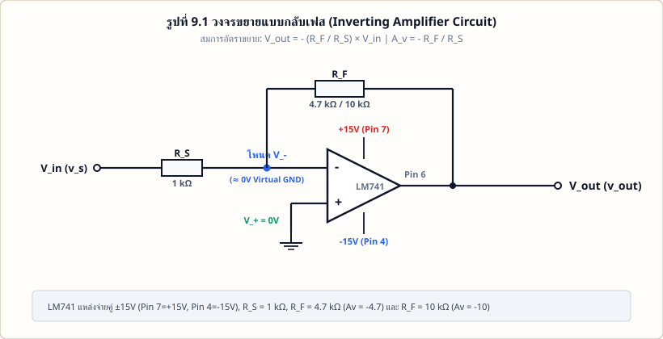
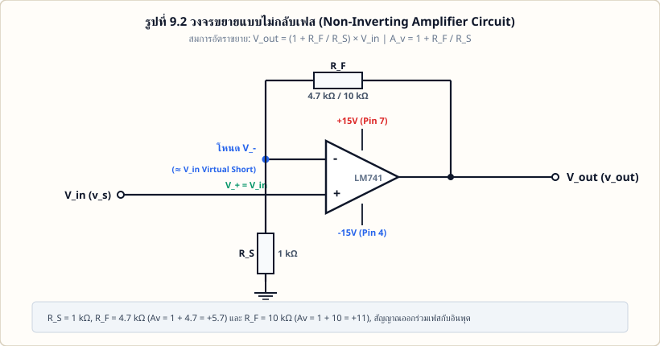
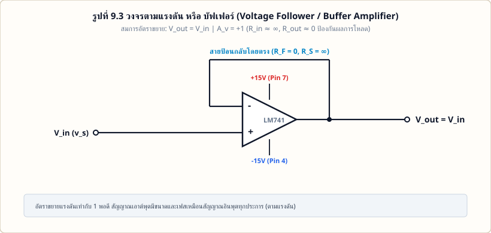
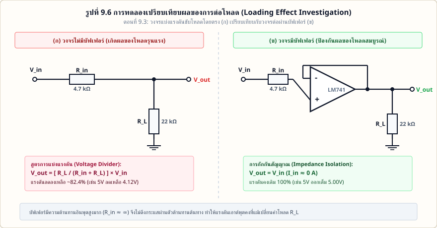
ตารางบันทึกผลการทดลอง (Experimental Data Tables)
การทดลองไฟตรง (DC) ในตอนที่ 9.1 ถึง 9.3 มีการบันทึกค่าจริงโดยนักศึกษาลงในเล่มคู่มือ (หน้า 92 - 94) ดังนี้:
ตารางที่ 9.1 ตารางผลการทดลองตอนที่ 9.1 วงจรขยายแบบกลับเฟส (Inverting Amplifier DC)
ตัวต้านทานขาเข้า RS = 1 kΩ, แหล่งจ่ายไฟคู่ ±15 V
| ตัวต้านทานป้อนกลับ RF | พารามิเตอร์ที่ศึกษา | แรงดันขาเข้า Vin (V) | สถานะการทำงาน (Operating State) | ||
|---|---|---|---|---|---|
| Vin = 2.5 V | Vin = 3.3 V | Vin = 5.0 V | |||
| RF = 4.7 kΩ (Av,cal = -4.7) |
Vout (V) [วัดจริง] | -13.32 V | -13.32 V | -13.52 V | อิ่มตัวขั้วลบ (Negative Saturation) แรงดันคำนวณ (-11.75V ถึง -23.5V) ชนเพดาน -Vsat |
| Av = Vout / Vin [วัดจริง] | -5.33 | -4.04 | -2.68 | ||
| Av,ทฤษฎี = - RF / RS | -4.70 | -4.70 | -4.70 | ||
| RF = 10 kΩ (Av,cal = -10.0) |
Vout (V) [วัดจริง] | -13.44 V | -13.50 V | -13.53 V | อิ่มตัวขั้วลบ (Negative Saturation) แรงดันคำนวณ (-25V ถึง -50V) ชนเพดาน -Vsat |
| Av = Vout / Vin [วัดจริง] | -5.38 | -4.09 | -2.71 | ||
| Av,ทฤษฎี = - RF / RS | -10.00 | -10.00 | -10.00 | ||
-Vsat ≈ -13.32 V ถึง -13.53 V) ได้ ทำให้ออปแอมป์เข้าสู่ย่านอิ่มตัวทุกค่า และอัตราขยายวัดจริง Vout / Vin จึงเบี่ยงเบนลดลงตามค่า Vin ที่เพิ่มขึ้น
ตารางวิเคราะห์ย่านเชิงเส้นตามทฤษฎี (Linear Region Reference Table)
| RF | RS | อัตราขยาย Av | Vin สูงสุดที่ยังไม่เกิดอิ่มตัว (Linear Vin Limit) | ตัวอย่าง Vin = 0.5 V | ตัวอย่าง Vin = 1.0 V |
|---|---|---|---|---|---|
| 4.7 kΩ | 1.0 kΩ | -4.70 | |Vin| < 2.87 V (Vout = -13.5 V) | Vout = -2.35 V (Av = -4.70) | Vout = -4.70 V (Av = -4.70) |
| 10.0 kΩ | 1.0 kΩ | -10.00 | |Vin| < 1.35 V (Vout = -13.5 V) | Vout = -5.00 V (Av = -10.00) | Vout = -10.00 V (Av = -10.00) |
ตารางที่ 9.2 ตารางผลการทดลองตอนที่ 9.2 วงจรขยายแบบไม่กลับเฟส (Non-Inverting Amplifier DC)
ตัวต้านทานขาเข้า RS = 1 kΩ, แหล่งจ่ายไฟคู่ ±15 V
| ตัวต้านทานป้อนกลับ RF | พารามิเตอร์ที่ศึกษา | แรงดันขาเข้า Vin (V) | สถานะการทำงาน (Operating State) | ||
|---|---|---|---|---|---|
| Vin = 2.5 V | Vin = 3.3 V | Vin = 5.0 V | |||
| RF = 4.7 kΩ (Av,cal = +5.7) |
Vout (V) [วัดจริง] | +14.32 V | +14.32 V | +14.32 V | อิ่มตัวขั้วบวก (Positive Saturation) แรงดันคำนวณ (+14.25V ถึง +28.5V) ชนเพดาน +Vsat |
| Av = Vout / Vin [วัดจริง] | 5.73 | 4.34 | 2.86 | ||
| Av,ทฤษฎี = 1 + RF / RS | +5.70 | +5.70 | +5.70 | ||
| RF = 10 kΩ (Av,cal = +11.0) |
Vout (V) [วัดจริง] | +14.32 V | +14.32 V | +14.32 V | อิ่มตัวขั้วบวก (Positive Saturation) แรงดันคำนวณ (+27.5V ถึง +55.0V) ชนเพดาน +Vsat |
| Av = Vout / Vin [วัดจริง] | 5.73 | 4.34 | 2.86 | ||
| Av,ทฤษฎี = 1 + RF / RS | +11.00 | +11.00 | +11.00 | ||
ตารางที่ 9.3 ตารางผลการทดลองตอนที่ 9.3 การศึกษาผลของโหลดและวงจรบัฟเฟอร์ (Loading Effect & Buffer)
ตัวต้านทานต้นทาง Rin = 1 kΩ, ตัวต้านทานโหลด RL = 4.7 kΩ
| รูปแบบวงจร | พารามิเตอร์แรงดัน | แรงดันขาเข้า Vin (V) | การวิเคราะห์พฤติกรรมทางไฟฟ้า | ||
|---|---|---|---|---|---|
| Vin = 2.5 V | Vin = 3.3 V | Vin = 5.0 V | |||
| รูปที่ 9.6(ก) ไม่มีวงจรบัฟเฟอร์ (ต่อตรงผ่าน Rin) |
Vout (V) [วัดจริง] | 2.280 V | 2.993 V | 4.533 V | เกิด Loading Effect แรงดันตกคร่อมโหลดดรอปลงเหลือประมาณ 82% - 90% ของแรงดันต้นทางเนื่องจากเกิดการแบ่งแรงดันระหว่าง Rin และ RL |
| Vout,cal = [RL / (Rin + RL)] × Vin | 2.061 V | 2.721 V | 4.123 V | ||
| รูปที่ 9.6(ข) มีวงจรบัฟเฟอร์ (ผ่าน Op-Amp Follower) |
Vout (V) [วัดจริง] | 2.500 V | 3.300 V | 5.000 V | รักษาระดับแรงดันได้ 100% (สมบูรณ์) ออปแอมป์มีความต้านทานอินพุตเป็นอนันต์ (Rin ≈ ∞) จึงไม่ดึงกระแสผ่านตัวต้านทานต้นทาง ทำให้แรงดันคงที่เท่ากับ Vin พอดี |
ผลการจำลองคลื่นสัญญาณออสซิลโลสโคป (Oscilloscope Screens)
การทดลองไฟสลับ (AC) ในตอนที่ 9.4 ถึง 9.6 ใช้สัญญาณคลื่นไซน์ความถี่ f = 300 Hz (คาบเวลา T = 1 / 300 ≈ 3.333 ms) ผ่านไอซีออปแอมป์ LM741 โดยแสดงผลการจำลองหน้าจอออสซิลโลสโคปเสมือนจริงพร้อมการ์ดวัดค่าพารามิเตอร์ด้านล่างที่อ่านง่ายและคมชัด 100%:
1. ตอนที่ 9.4: การขยายสัญญาณแบบกลับเฟส (Inverting AC, RS = 1 kΩ, RF = 10 kΩ, Av = -10)
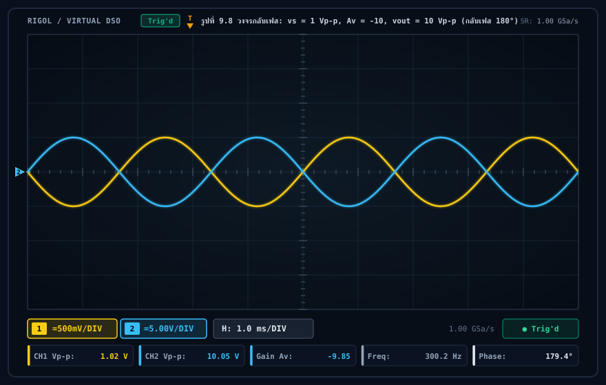
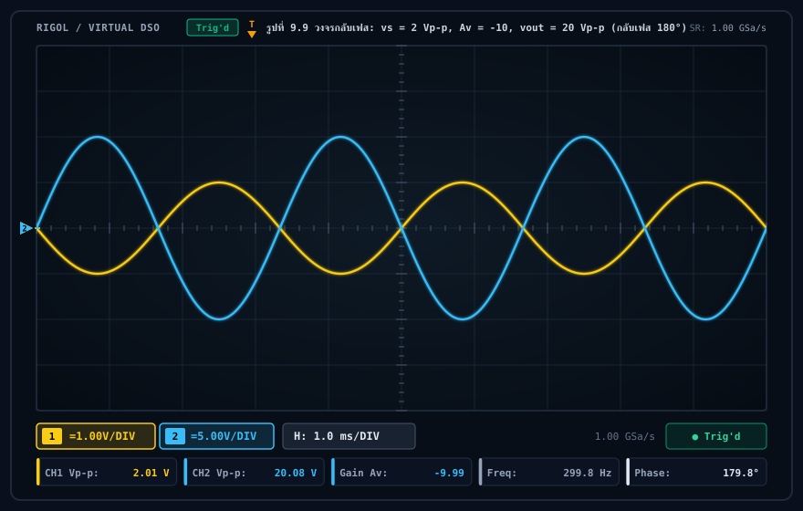
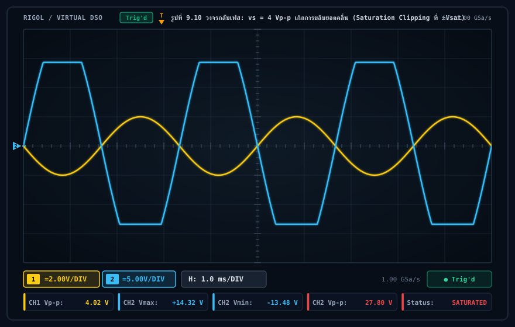
2. ตอนที่ 9.5: การขยายสัญญาณแบบไม่กลับเฟส (Non-Inverting AC, RS = 1 kΩ, RF = 10 kΩ, Av = +11)
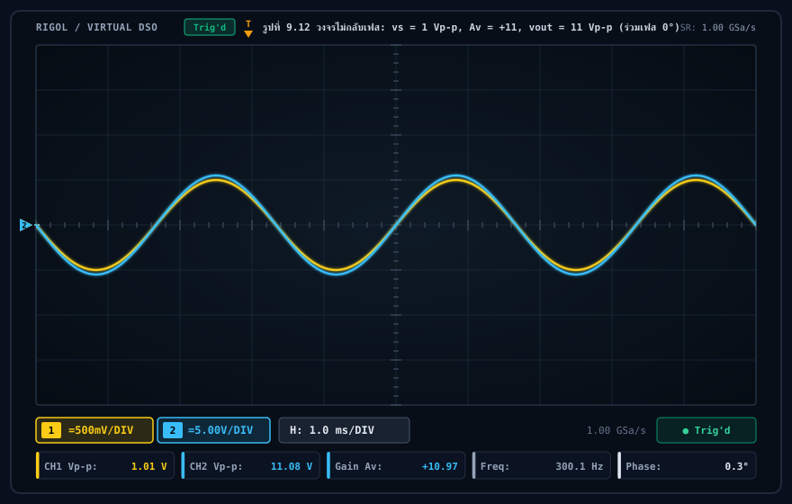
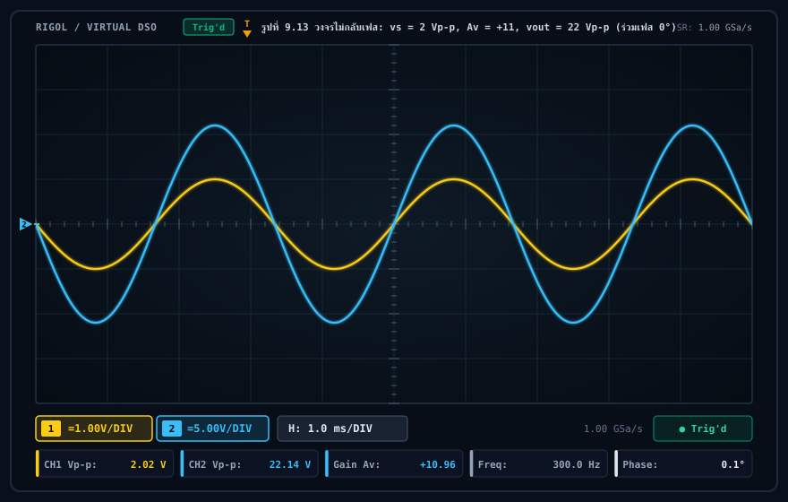
3. ตอนที่ 9.6: วงจรตามแรงดัน (Voltage Follower / Buffer AC, Av = +1.00)
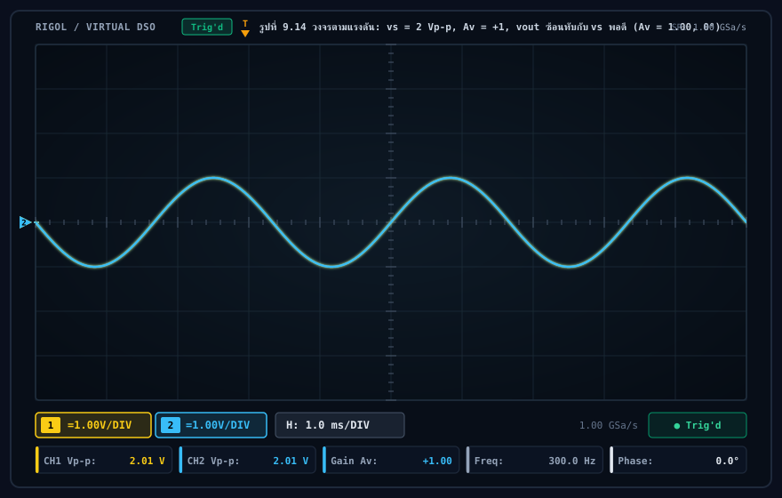
การคำนวณและสูตรทางคณิตศาสตร์ (Mathematical Formulations)
การวิเคราะห์ทางทฤษฎีตามระเบียบวิธีทางวิศวกรรมไฟฟ้า ปราศจากการใช้ KaTeX/LaTeX โดยใช้ Pure CSS Fractions และ Unicode สากล:
1. วงจรขยายแบบกลับเฟส (Inverting Amplifier)
เมื่อแทนค่าตัวต้านทานในการทดลอง:
- กรณี RF = 4.7 kΩ และ RS = 1.0 kΩ:
Av = - (4.7 / 1.0) = -4.70 - กรณี RF = 10.0 kΩ และ RS = 1.0 kΩ:
Av = - (10.0 / 1.0) = -10.00
2. วงจรขยายแบบไม่กลับเฟส (Non-Inverting Amplifier)
เมื่อแทนค่าตัวต้านทานในการทดลอง:
- กรณี RF = 4.7 kΩ และ RS = 1.0 kΩ:
Av = 1 + (4.7 / 1.0) = +5.70 - กรณี RF = 10.0 kΩ และ RS = 1.0 kΩ:
Av = 1 + (10.0 / 1.0) = +11.00
3. วงจรบัฟเฟอร์และสูตรการแบ่งแรงดันของโหลด (Loading Effect Formula)
เมื่อ Rin = 1 kΩ และ RL = 4.7 kΩ:
วิเคราะห์ผลการทดลองเชิงลึก (In-depth Technical Analysis)
1. การวิเคราะห์ปรากฏการณ์อิ่มตัวของแรงดัน (Saturation Voltage Mechanism)
จากผลการทดลองไฟตรงในตารางที่ 9.1 และ 9.2 จะเห็นว่าค่า Vout ที่วัดได้ไม่ขึ้นกับ Vin เมื่อ Vin มีค่าสูง (2.5V, 3.3V, 5.0V) โดยมีค่าคงที่อยู่ที่ -13.32 V ถึง -13.53 V ในวงจรกลับเฟส และ +14.32 V ในวงจรไม่กลับเฟส ปรากฏการณ์นี้อธิบายได้ดังนี้:
- ข้อจำกัดของโครงสร้างทรานซิสเตอร์ภายใน: ไอซี LM741 มีวงจรขับเอาต์พุต (Output Stage) แบบ Class-AB Complementary BJT ซึ่งทรานซิสเตอร์เอาต์พุตต้องการแรงดันตกคร่อมรอยต่อ Vce,sat ประมาณ 0.7 V ถึง 1.5 V เพื่อให้อยู่ในสภาวะนำกระแส
- เพดานแรงดันอิ่มตัว (+Vsat และ -Vsat): เมื่อใช้แหล่งจ่าย ±15 V แรงดันเอาต์พุตสูงสุดจึงไม่สามารถขึ้นไปถึง +15 V ได้ แต่จะตันอยู่ที่
+Vsat ≈ +VCC - 1.2V ≈ +14.32 Vและ-Vsat ≈ -VEE + 1.5V ≈ -13.48 V - การสูญเสียคุณสมบัติเชิงเส้น: เมื่อแรงดันชนเพดาน Vsat ออปแอมป์จะไม่สามารถรักษาเงื่อนไข Virtual Short (V+ ≈ V-) ได้อีกต่อไป ส่งผลให้อัตราขยายลดลงตามสัดส่วน Vsat / Vin
2. การวิเคราะห์การแก้ปัญหาผลของโหลดด้วยวงจรบัฟเฟอร์ (Loading Effect Mitigation)
ในระบบการวัดและเครื่องมือวัดทั่วไป วงจรตรวจจับสัญญาณ (Sensor/Source) มักมีค่าความต้านทานภายใน (Thevenin Resistance: Rth) หากนำโหลดที่มีค่าความต้านทาน RL ต่อเข้าโดยตรง จะเกิดการแบ่งแรงดันทำให้สัญญาณที่ตกคร่อมโหลดมีขนาดเล็กลงอย่างมีนัยสำคัญ
การนำออปแอมป์มาต่อเป็น วงจรบัฟเฟอร์ (Voltage Follower) เป็นการสร้างตัวกักกันอิมพีแดนซ์ (Impedance Buffer):
- ความต้านทานอินพุตของบัฟเฟอร์มีค่ามหาศาล (
Rin,opamp ≈ 2 MΩ - 10¹² Ω) ทำให้กระแสที่ดึงจากแหล่งกำเนิดสัญญาณแทบเป็นศูนย์ (Iin ≈ 0 A) แรงดันตกคร่อมตัวต้านทานต้นทาง Rin จึงมีค่าเกือบเป็นศูนย์ ส่งผลให้แรงดันที่ขาอินพุตบวกมีค่าเท่ากับ Vin เต็มที่ - ความต้านทานเอาต์พุตของบัฟเฟอร์มีค่าต่ำมาก (
Rout,opamp ≈ 75 Ω) และเมื่อมี Negative Feedback ความต้านทานเอาต์พุตประสิทธิผลจะลดลงเหลือเพียงเสี้ยวของมิลลิโอห์ม จึงสามารถจ่ายกระแสให้โหลด RL ได้โดยแรงดันไม่ดรอป
3. การวิเคราะห์ด้านความถี่และการเลื่อนเฟส (AC Phase & Waveform Fidelity)
ในการทดลองไฟสลับที่ความถี่ f = 300 Hz สัญญาณอยู่ในย่านความถี่ต่ำของ LM741 (Unity Gain Bandwidth = 1 MHz) จึงไม่มีปัญหาเรื่อง Bandwidth Roll-off:
- วงจรกลับเฟส (Inverting): มุมเฟสระหว่าง CH1 และ CH2 ต่างกัน 179.4° - 180° ซึ่งเกิดจากเครื่องหมายลบในฟังก์ชันถ่ายโอนทางคณิตศาสตร์
Av = -RF / RS - วงจรไม่กลับเฟส (Non-Inverting): มุมเฟสระหว่าง CH1 และ CH2 มีค่า 0.0° - 0.3° คลื่นทั้งสองขึ้นลงพร้อมกันทุกประการ
สรุปผลการทดลอง (Laboratory Conclusion)
จากการทำปฏิบัติการที่ 9 เรื่อง วงจรขยายเชิงปฏิบัติการ (Op-Amp) สามารถสรุปสาระสำคัญได้ 4 ประการ:
- อัตราขยายแรงดันของวงจรขยายแบบกลับเฟส ถูกกำหนดโดยอัตราส่วนของตัวต้านทานภายนอก
Av = - (RF / RS)สัญญาณเอาต์พุตมีขนาดขยายตามอัตราส่วนและมีเฟสตรงข้ามกับอินพุต 180° เสมอ - อัตราขยายแรงดันของวงจรขยายแบบไม่กลับเฟส ถูกกำหนดโดย
Av = 1 + (RF / RS)สัญญาณเอาต์พุตมีขนาดขยายและมีเฟสเดียวกับสัญญาณอินพุต (ร่วมเฟส 0°) โดยอัตราขยายจะมีค่าไม่น้อยกว่า 1 เสมอ - วงจรตามแรงดัน (Voltage Follower / Buffer) มีอัตราขยายแรงดันเท่ากับ 1 พอดี (Av = +1) มีบทบาทสำคัญอย่างยิ่งในการเป็นวงจรกักกันอิมพีแดนซ์ (Impedance Isolation) เพื่อขจัดปัญหาผลของการต่อโหลด (Loading Effect) ช่วยให้แรงดันจากตัวกำเนิดสัญญาณคงที่ 100%
- ข้อจำกัดด้านแรงดันอิ่มตัว (Saturation Limit) แอมพลิจูดของสัญญาณเอาต์พุตถูกจำกัดด้วยแรงดันของแหล่งจ่ายไฟคู่ ±VCC และ -VEE โดยจะมีค่าสูงสุดไม่เกิน ±Vsat (ประมาณ +14.3 V และ -13.5 V สำหรับ LM741 ที่ใช้ไฟเลี้ยง ±15 V) หากแรงดันคำนวณเกินขอบเขตนี้ สัญญาณจะเกิดการขลิบยอดคลื่น (Clipping Distortion) ทันที
เฉลยคำถามท้ายการทดลอง (Post-Lab Solutions with Diagrams)
การตอบคำถามท้ายบทปฏิบัติการตามคู่มือหน้า 103 พร้อมรูปภาพวงจรจำลองประกอบการพิสูจน์ตามหลักการเคอร์ชอฟฟ์อย่างละเอียด:
คำตอบและขั้นตอนการพิสูจน์ทางคณิตศาสตร์อย่างชัดแจ้ง:
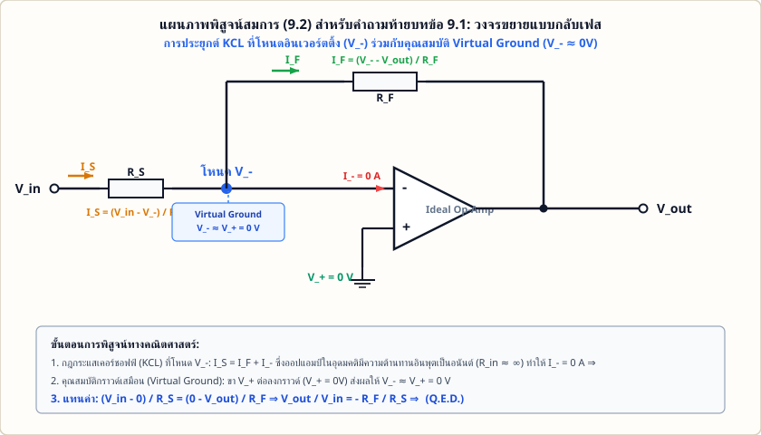
พิจารณาวงจรขยายแบบกลับเฟส (Inverting Amplifier) ในรูปที่ 9.1 โดยใช้ออปแอมป์ในอุดมคติ (Ideal Op-Amp):
-
คุณสมบัติอิมพีแดนซ์อินพุต: เนื่องจากความต้านทานอินพุตของออปแอมป์มีค่าเป็นอนันต์ (Rin ≈ ∞) กระแสไฟฟ้าที่ไหลเข้าขั้วอินเวอร์ตติ้งจึงเป็นศูนย์:
I- = 0 A
-
การประยุกต์กฎกระแสเคอร์ชอฟฟ์ (KCL) ที่โหนด V-:
∑ Iเข้าโหนด = ∑ Iออกโหนด ⇒ IS = IF + I-เนื่องจาก I- = 0 A จึงได้:IS = IF
-
คุณสมบัติกราวด์เสมือน (Virtual Ground): ขั้วอินพุตไม่กลับเฟส (Non-inverting input: Pin 3) ต่อลงกราวด์โดยตรง ทำให้
V+ = 0 Vจากคุณสมบัติ Virtual Short ของออปแอมป์ที่มี Negative Feedback:V- ≈ V+ = 0 V -
หาค่ากระแสผ่านตัวต้านทานตามกฎของโอห์ม:
IS = Vin - V-RS = Vin - 0RS = VinRSIF = V- - VoutRF = 0 - VoutRF = - VoutRF
-
จับสมการเท่ากันตาม KCL (IS = IF):
VinRS = - VoutRFจัดรูปสมการหาอัตราส่วนของแรงดันเอาต์พุตต่ออินพุต:VoutVin = - RFRSดังนั้น อัตราขยายแรงดัน (Voltage Gain: Av) คือ:Av = VoutVin = - RFRS (ตรงตามสมการที่ 9.2 Q.E.D.)
คำตอบและขั้นตอนการพิสูจน์ทางคณิตศาสตร์อย่างชัดแจ้ง:
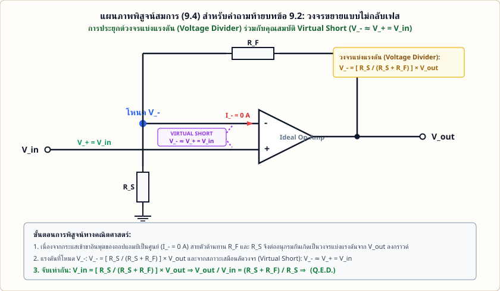
พิจารณาวงจรขยายแบบไม่กลับเฟส (Non-Inverting Amplifier) ในรูปที่ 9.2:
-
แรงดันที่ขั้วอินพุตไม่กลับเฟส: สัญญาณอินพุต Vin ถูกป้อนเข้าขั้วบวกโดยตรง:
V+ = Vin
-
คุณสมบัติเสมือนลัดวงจร (Virtual Short): ภายใต้การต่อป้อนกลับแบบลบ อัตราขยายวงเปิด Aol ที่สูงมากจะบังคับให้ความต่างศักย์ระหว่างขั้วอินพุตมีค่าเกือบเป็นศูนย์:
V- ≈ V+ = Vin
-
การแบ่งแรงดันที่สายป้อนกลับ (Voltage Divider): เนื่องจากกระแสไหลเข้าขั้วอินเวอร์ตติ้งเป็นศูนย์ (I- = 0 A) ตัวต้านทาน RF และ RS จึงต่ออนุกรมกันระหว่างโหนดเอาต์พุต Vout กับกราวด์ (0V) แรงดันที่โหนด V- จึงเกิดจากสูตรวงจรแบ่งแรงดัน:
V- = [ RSRS + RF ] × Vout
-
แทนค่าเงื่อนไข Virtual Short (V- = Vin):
Vin = [ RSRS + RF ] × Voutย้ายข้างเพื่อหาอัตราส่วน Vout / Vin:VoutVin = RS + RFRS = RSRS + RFRSAv = VoutVin = 1 + RFRS (ตรงตามสมการที่ 9.4 Q.E.D.)
คำตอบ: ข้อจำกัดของออปแอมป์ที่ทำให้รูปคลื่นสัญญาณเอาต์พุต Vout(t) ผิดเพี้ยนไปจากสัญญาณรูปไซน์อินพุต ประกอบด้วย 2 ข้อจำกัดหลัก ทางกายภาพ ดังนี้:
-
ข้อจำกัดด้านแรงดันเอาต์พุตอิ่มตัว (Saturation Voltage Limit: ±Vsat) [ปรากฏชัดในการทดลองตอนที่ 9.4.8 - 9.4.9 รูปที่ 9.10]:
- สาเหตุ: แอมพลิจูดสูงสุดของแรงดันเอาต์พุตถูกจำกัดด้วยแรงดันไบแอสของแหล่งจ่ายไฟเลี้ยง (Power Supply Rails: +VCC = +15V และ -VEE = -15V) เมื่อขยายสัญญาณด้วยอัตราขยาย Av = -10 แล้วแรงดันที่ควรจะเป็น
|Av × vs|มีค่าสูงเกินกว่าแรงดันอิ่มตัว (เช่น เมื่อ vs = 4 Vp-p จะได้ค่าตามทฤษฎี 40 Vp-p ซึ่งยอดคลื่นสูงถึง ±20 V) - ผลกระทบ: ยอดคลื่นไซน์ทั้งด้านบวกและด้านลบจะถูกขลิบตัดแบนราบ (Clipping Distortion) ที่ขอบบน
+Vsat ≈ +14.3 Vและขอบล่าง-Vsat ≈ -13.5 Vทำให้รูปคลื่นเปลี่ยนจากสัญญาณไซน์บริสุทธิ์กลายเป็นคลื่นที่มีลักษณะคล้ายคลื่นสี่เหลี่ยมคางหมูหรือคลื่นสี่เหลี่ยม (Square-like wave)
- สาเหตุ: แอมพลิจูดสูงสุดของแรงดันเอาต์พุตถูกจำกัดด้วยแรงดันไบแอสของแหล่งจ่ายไฟเลี้ยง (Power Supply Rails: +VCC = +15V และ -VEE = -15V) เมื่อขยายสัญญาณด้วยอัตราขยาย Av = -10 แล้วแรงดันที่ควรจะเป็น
-
ข้อจำกัดด้านอัตราสลูว์ หรือ ความเร็วการตอบสนองแรงดันสูงสุด (Slew Rate Limit: SR = dV/dt max):
- สาเหตุ: ภายในตัวไอซีออปแอมป์มีตัวเก็บประจุชดเชยเฟสเพื่อรักษาเสถียรภาพ (Internal Frequency Compensation Capacitor, Cc ≈ 30 pF ใน LM741) ซึ่งถูกชาร์จและดิสชาร์จด้วยแหล่งจ่ายกระแสคงที่ภายใน (Tail Current Ibias) ทำให้อัตราการเปลี่ยนแปลงแรงดันเอาต์พุตสูงสุดมีขีดจำกัด โดย LM741 มีอัตราสลูว์เท่ากับ
SR = 0.5 V/μs - ผลกระทบ: เมื่อความถี่ (f) หรือขนาดแอมพลิจูด (Vp) ของสัญญาณมีค่าสูงจนอัตราการเปลี่ยนแปลง
2π × f × Vp > SRเอาต์พุตจะไม่สามารถเปลี่ยนค่าได้ทันความชันของคลื่นไซน์ ทำให้รูปคลื่นเกิดการบิดเบี้ยวกลายเป็น คลื่นรูปสามเหลี่ยม (Triangular Wave Distortion)
- สาเหตุ: ภายในตัวไอซีออปแอมป์มีตัวเก็บประจุชดเชยเฟสเพื่อรักษาเสถียรภาพ (Internal Frequency Compensation Capacitor, Cc ≈ 30 pF ใน LM741) ซึ่งถูกชาร์จและดิสชาร์จด้วยแหล่งจ่ายกระแสคงที่ภายใน (Tail Current Ibias) ทำให้อัตราการเปลี่ยนแปลงแรงดันเอาต์พุตสูงสุดมีขีดจำกัด โดย LM741 มีอัตราสลูว์เท่ากับ
ข้อมูลอ้างอิงและภาพถ่ายใบบันทึกผลจริง (Lab Sheets Gallery)
ภาพถ่ายต้นฉบับใบบันทึกผลการทดลองจริงของนักศึกษาในเล่มคู่มือปฏิบัติการวิศวกรรมไฟฟ้า 1 (หน้า 89 ถึง 103) สามารถคลิกเพื่อดูภาพขยายความละเอียดสูง:
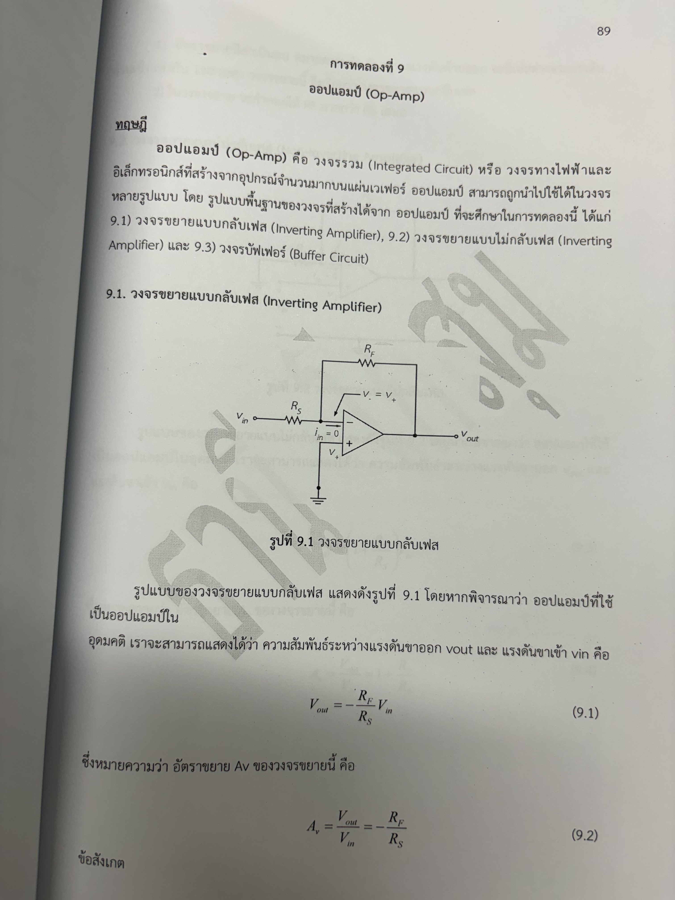
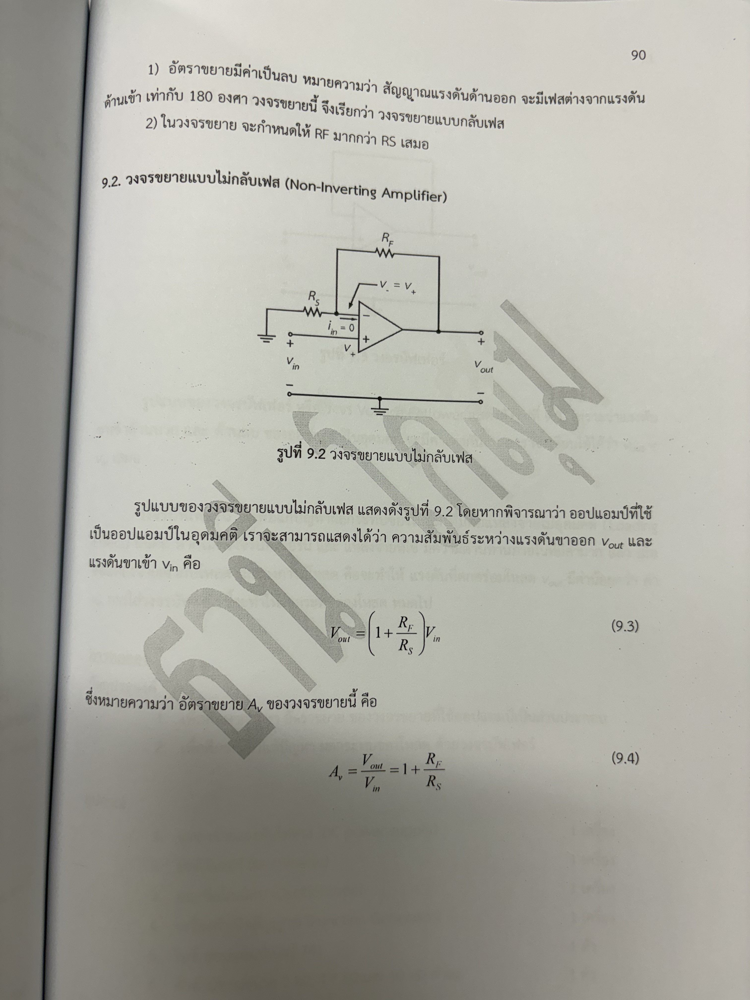
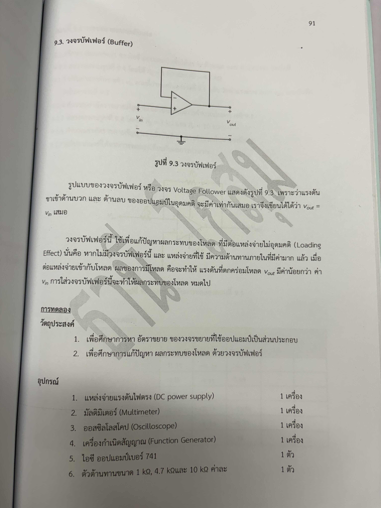
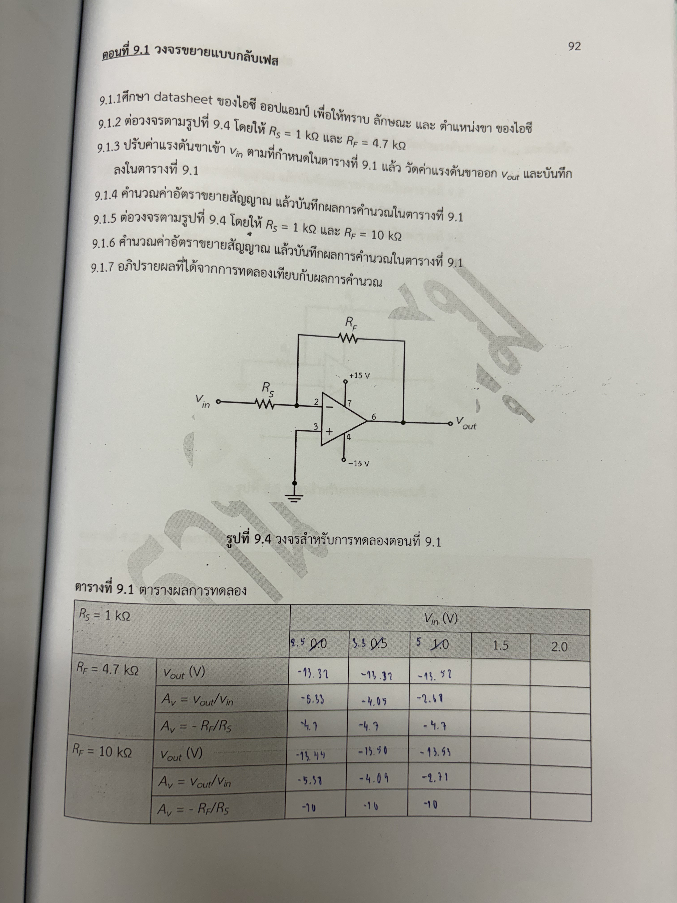
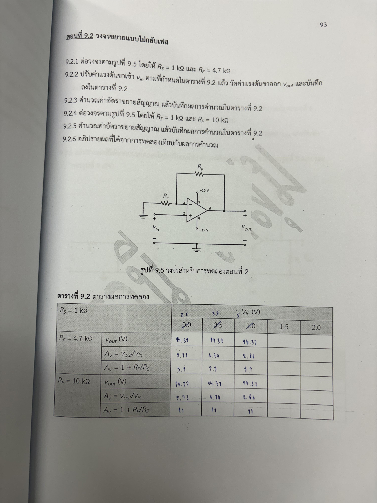
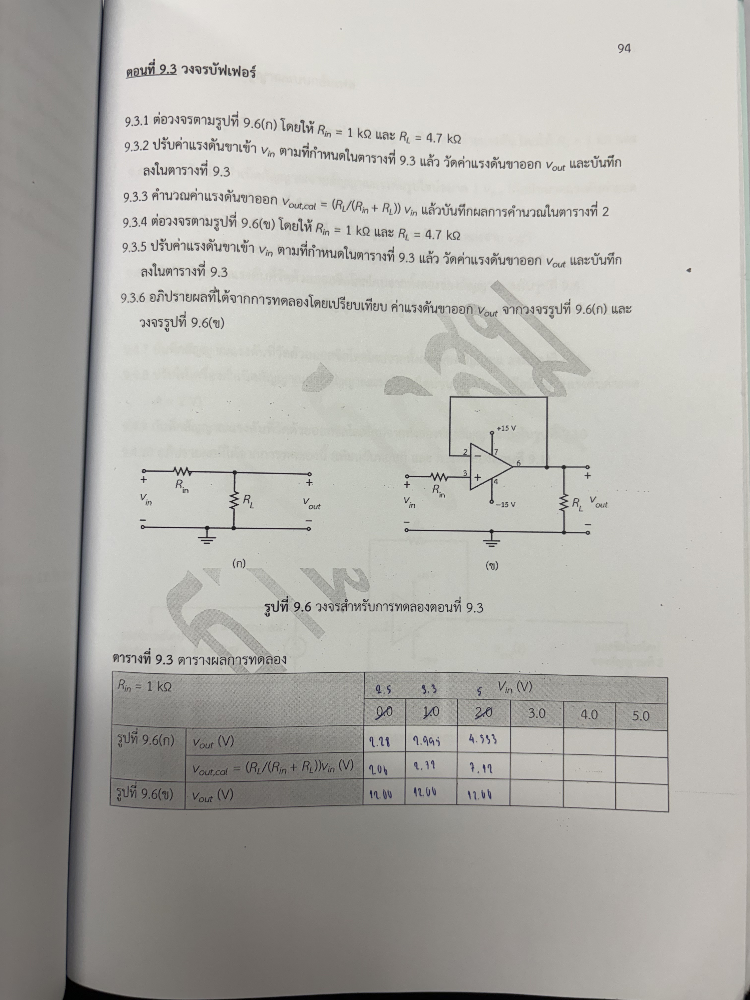
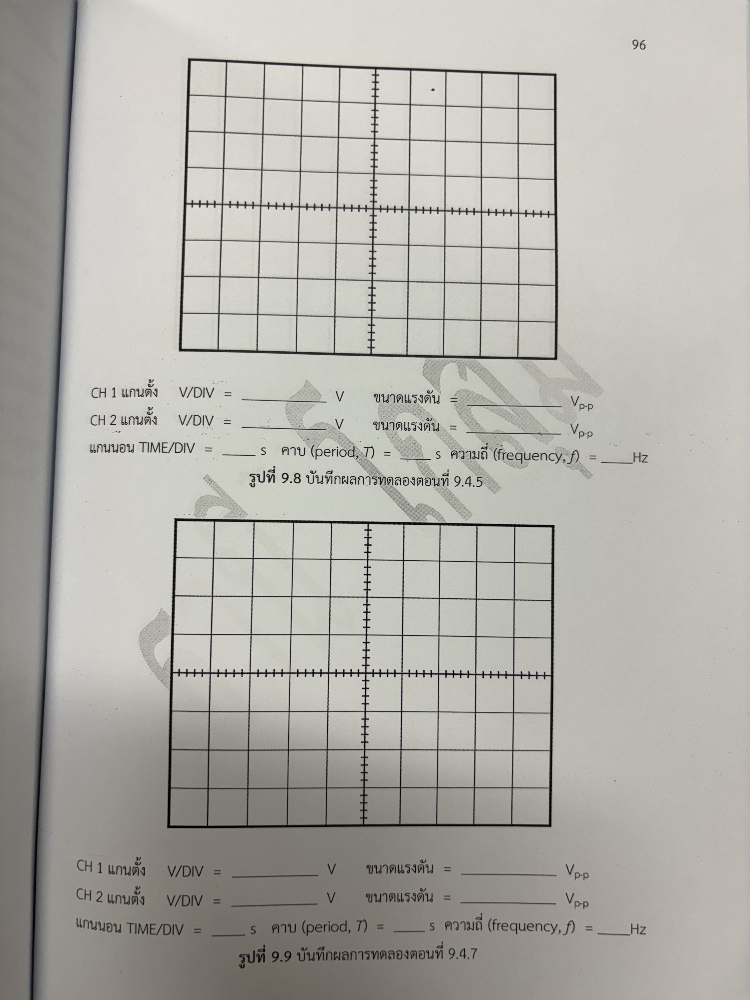
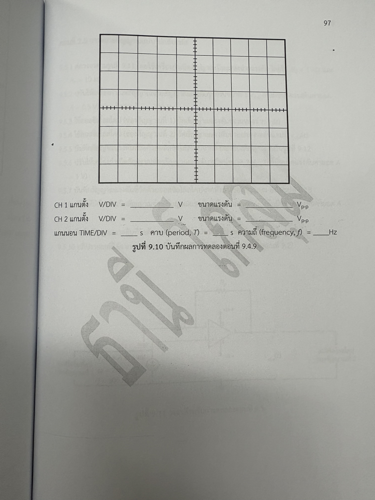
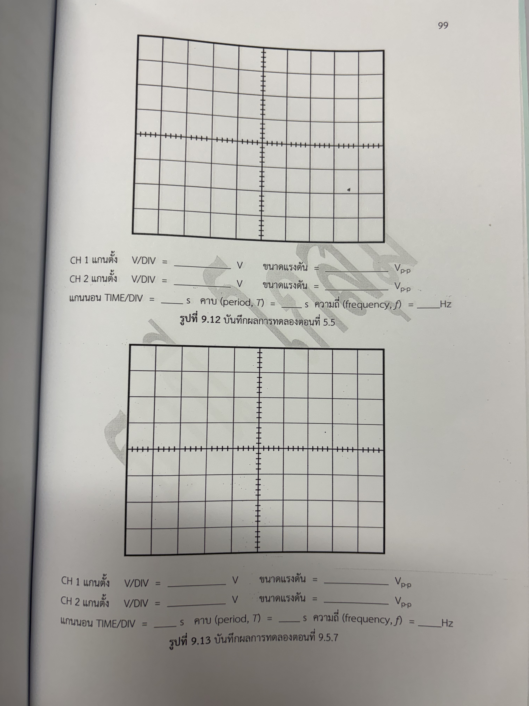
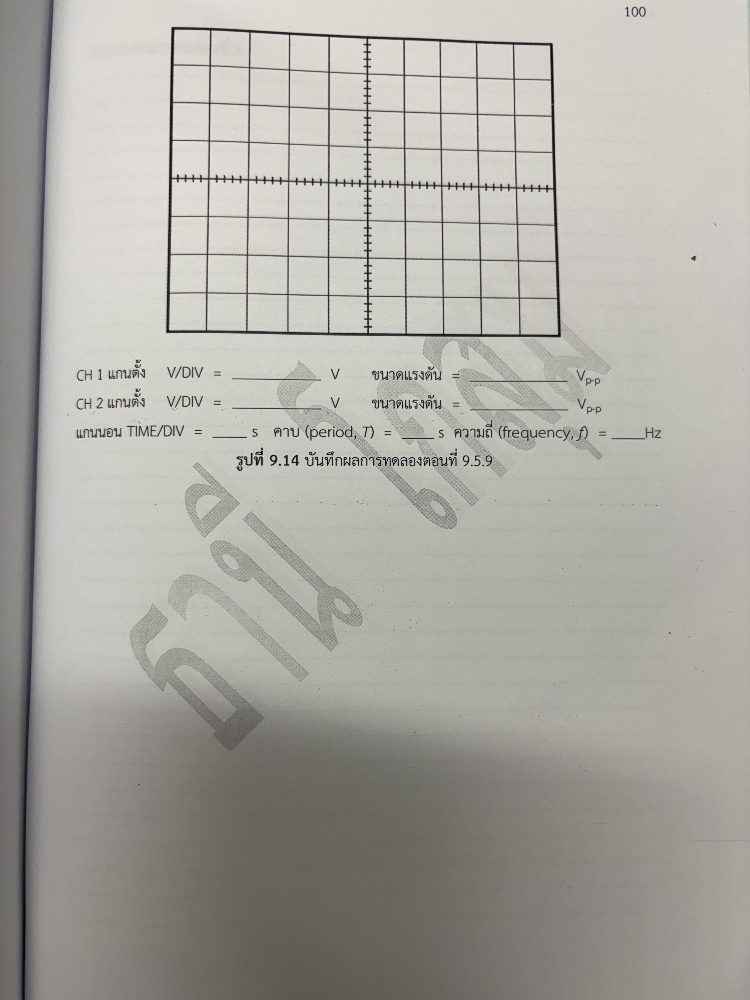
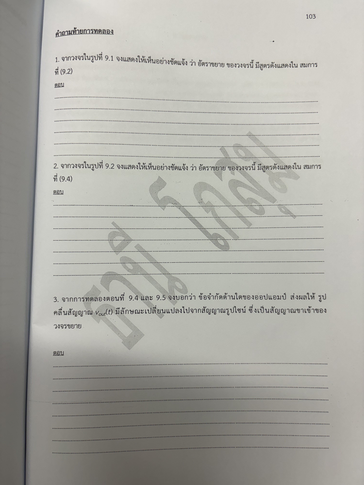